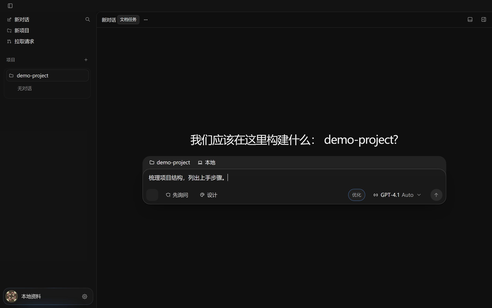

整理资料
导入项目文件，让模型阅读和搜索文本，归纳主题、提炼重点，整理成便于使用的清单。
“把这些记录归纳成主题，列出还缺的信息。”

从阅读资料到审查改动，项目文件、对话和成果都在同一个工作区里。
导入项目文件，让模型阅读和搜索文本，归纳主题、提炼重点，整理成便于使用的清单。
“把这些记录归纳成主题，列出还缺的信息。”
围绕已有资料起草说明、报告和 Markdown 文档，补充要求后继续修改，最后下载成果。
“根据项目资料，起草一份对外介绍。”
理解项目结构、定位问题、提出文件修改。需要运行检查时，连接云端终端或使用桌面环境。
“检查手机端布局，提交修改供我审查。”
在「审查」中比较修改前后内容，逐项应用或舍弃建议，确认结果后再下载或授权写回。
“先说明改了哪里，再让我确认。”
用 Skill 保存任务说明、输出要求和固定步骤，让下一次工作从已有经验开始。
“按这份指南整理资料，保持同样的结构。”
通过 MCP 接入可用的外部工具与信息，通过终端运行命令，把能力扩展到实际任务需要的范围。
“调用已连接的工具，补充这份资料。”
先选一个范围明确的小任务。你可以补充要求、授权操作，并在保存前复核每一处改动。
连接模型，导入文件，告诉 Carb 这个项目是做什么的。
说明要完成什么、给谁使用，以及期望的输出格式。
查看执行过程，补充要求，按需要授权工具调用。
审查文件差异，保存结果，再提出下一轮调整。
根据手头的任务选择运行环境。模型服务、工具与云资源按你的配置连接。
创建项目和会话，导入文件，连接模型，读取与搜索文本，审查和下载修改后的成果。启用 Markdown 技能说明，也可以连接支持跨域访问的 HTTPS MCP 服务。
会话和项目保存在当前浏览器。模型密钥与 MCP 令牌仅在当前页面打开期间保留。
进入网页工作台打开本地项目，连接 API 服务或独立 CLI，在文件、终端、变更审查之间衔接任务。按需要管理技能包、MCP、外观与用户资料。
提供 Windows x64 安装版与完整便携包，可在发行页选择版本和校验资料。
查看下载入口在网页工作台的「终端」里，用自己的 E2B 密钥启动最长 15 分钟的 Linux 会话，或登录 GitHub 创建 Codespace。可以交互输入命令、调整终端大小、启动 Codex CLI 或 Claude Code。模型账号和云资源使用各自的配额。
一个提供任务步骤，一个提供可调用的工具与信息。按需要组合，搭建自己的工作方式。
Skill 是一组可复用的任务说明，通常以 SKILL.md 为入口。把固定步骤、资料整理方法和输出结构写下来，让工作沿着熟悉的流程进行。
SKILL.md任务说明、适用场景和输出要求references /桌面技能包可附带参考资料scripts /脚本按运行环境和任务需要执行网页可导入 Markdown 技能指南。桌面版支持本地 ZIP 或技能文件夹。
查看技能使用指南MCP 是连接 AI 与外部工具、数据的协议。添加服务、检查可用工具，再按任务调用，让项目与所需的信息来源衔接起来。
网页支持 HTTPS Streamable HTTP 和可选 Bearer 令牌。需要 STDIO 或 OAuth 时，在支持它们的 CLI 或桌面 Agent 中配置。
查看 MCP 连接指南例如，用文档整理 Skill 约定输出结构，通过已连接的 MCP 获取资料，再在项目里检查整理结果。实际能力由所选模型、服务、Agent 和运行环境共同决定。
先连接模型，再按需要添加 Skill 与 MCP。
点击「开始工作」，在右上角选择 AI 厂商，粘贴该厂商的 API 密钥。模型和地址已预设，也可在高级设置中调整。
导入文件或文件夹，也可以新建项目文件。第一次可以从一份 README 或几段资料开始。
说明输入资料、要做的事和输出文件名。Carb 可读取与搜索项目文本，并提交文件改动供你检查。
在「审查」中比较差异，确认后应用，再下载文件。在支持的浏览器中，也可授权写回项目目录。
“阅读这个项目的 README，整理一份新手上手清单，保存为 getting-started.md，并告诉我还缺哪些信息。”
在 Releases 选择安装包，或解压完整便携包。打开 Carb 后配置模型服务或独立 CLI，选择本地项目，再按提示处理授权和检查成果。
网页版在工作台侧栏打开「技能」，导入 SKILL.md 或 Markdown 指南并启用。启用的说明会随任务发送给模型。下方是桌面版技能包的安装方式。
准备包含 SKILL.md 的技能文件夹或 ZIP，先阅读技能说明和附带脚本。
点击“安装技能”，选择本地 ZIP 或技能文件夹，预览技能内容。
核对名称、描述与文件数量，勾选条目再安装。安装到软件全局技能目录，不直接覆盖已有同名技能。
在技能列表管理启用状态，在对话中点名技能或描述适用任务，并复核输出。
技能安装与实际调用是两个步骤。实际调用方式与效果取决于所选 Agent、模型和技能所需运行环境。
网页版在侧栏打开「MCP」，填写支持网页跨域访问的 HTTPS 服务地址和可选访问令牌。连接后可测试工具，模型调用时逐次授权。下方是桌面版的服务配置方式。
进入设置中的 MCP servers，选择支持此功能的 Agent / Provider，点击 Add server。
填写 Server ID，可选填写 Display name。按服务说明提供 stdio 启动命令与参数，或 HTTP 服务地址及认证配置。
准备好运行环境与授权。支持重载的 Agent 可重载服务；其他情况按提示开始新对话。服务要求 OAuth 时完成授权。
明确指定资料与目标，检查工具返回的信息和最终输出；需要调整时可编辑或删除配置。
{"type":"http","url":"https://你的服务地址/mcp"}请替换为服务方提供的真实地址；认证与服务权限按该服务说明配置。
以下是相关基础教程与参考文档，按需阅读即可。
切换预设场景，运行示例，查看项目文件与变更审查。交互演示使用示例数据，不调用模型。
可以从阅读资料、整理文档等明确的小任务开始。用自然语言描述目标；涉及代码、命令或文件变更时，按提示检查并复核结果。
准备所选 AI 厂商的 API 密钥，在工作台选择厂商后填写即可。需要时可在高级设置中更换模型或自定义服务。模型额度和费用按厂商规则使用，自定义服务需要允许网页跨域访问。CLI 使用对应的账号或凭据。
网页版把项目和会话保存在当前浏览器。模型密钥和 MCP 令牌保留在当前页面内存，刷新后需要重新填写。重要成果请及时下载。发送任务或调用外部工具时，相关内容会传给你选择的服务。云端文件保存在对应的执行环境里。
打开工作台的「终端」，使用自己的 E2B 密钥或 GitHub Codespaces 账号连接独立的 Linux 云环境。E2B 单次会话最长 15 分钟，可上传项目文件、下载成果；CLI 首次使用时会下载客户端，并要求登录或配置模型凭据。
Skill 为 Agent 提供可复用的知识和执行步骤；MCP 让 Agent 连接工具与数据。两者可以组合使用，具体调用能力由所选模型、Agent 和配置决定。
网页版适合从导入资料、文本处理、审查改动和下载文件开始，命令任务可以连接云环境。桌面版可以直接围绕本机文件夹工作，并使用本机终端、独立 CLI 和相应系统集成。各环境的路径、工具和权限按实际运行方式提供。
可以打开交互演示，切换预设任务，查看文件与差异。演示使用示例数据。准备处理自己的项目时，点击「开始工作」进入工作台。
CARB DOWNLOADS
选择更适合你的站点，打开 Carb 的下载与版本页面。
网络提示 GitHub 可能需要 VPN 或其他网络条件；Gitee 通常可以在国内直连。两个入口的版本内容可能存在同步时间差。